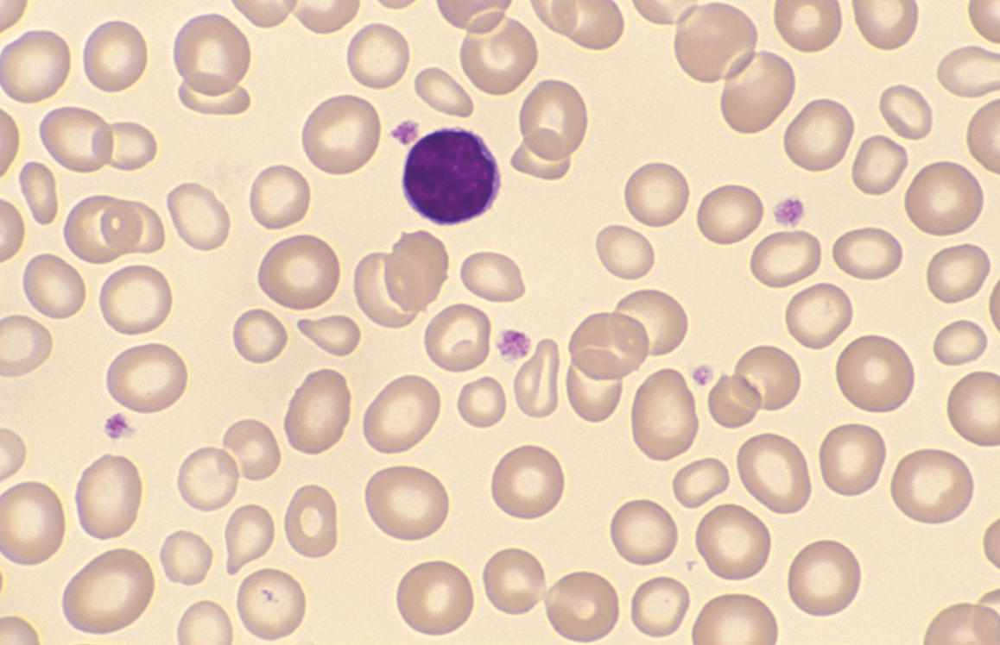

A Practical Guide for the Laboratory
Welcome to Microscopic Haematology—a trusted resource for students and professionals in haematology, featuring case studies and essential reference books.
Authored by Gillian Rozenberg, Principal Medical Scientist at Prince of Wales Hospital in Sydney, her books provide invaluable insights into blood morphology and diagnostics. The site offers case studies, based on real patients, to assist your practical understanding of haematological conditions.
Available books include Microscopic Haematology, 3rd Edition—an atlas with over 400 high-quality blood film images, Cases in Microscopic Haematology, featuring 80 case studies to refine your diagnostic skills and Guide to Paediatric Haematology Morphology an illustrated guide to identifying or confirming blood disorders in paediatric patients.
Additionally, Gillian provides morphology workshop videos, paediatric reference ranges, and red cell nomenclature guidance to support your learning. Whether you're a student, researcher, or practitioner Microscopic Haematology is your go-to source for haematological education and reference materials.